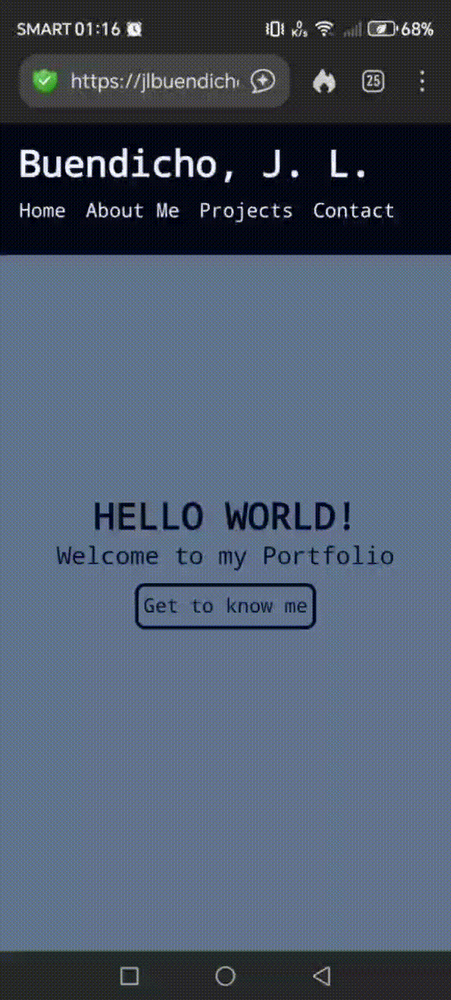
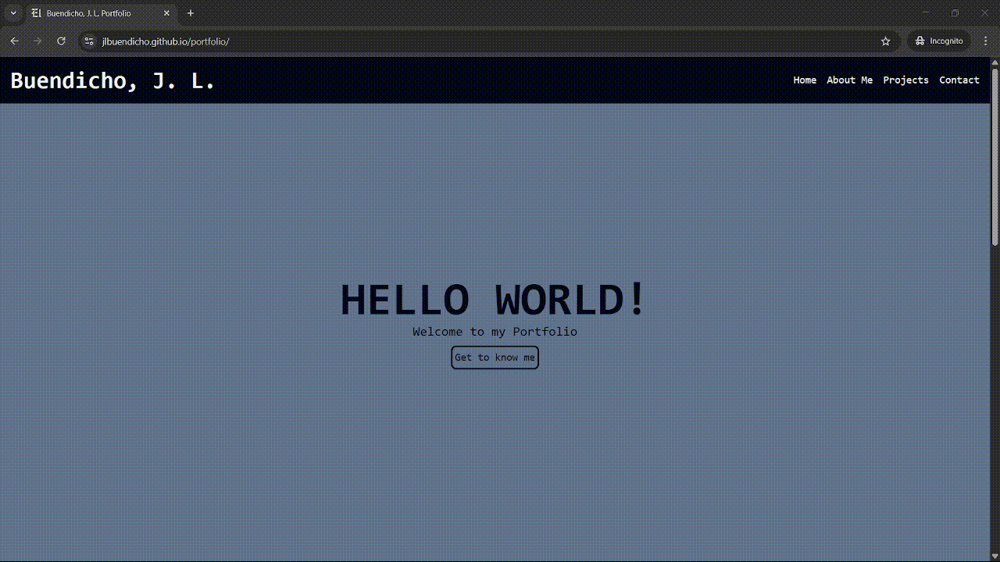

Portfolio
A portfolio website hosted on GitHub Pages, containing my personal projects, showcasing my learnings, skills, and capabilities as an IT.
This repository was initially created as a subject requirement for my COMP-016 Web Development course during the first semester of my junior year as a Bachelor of Science in Information Technology at The Polytechnic University of The Philippines, wherein I was given the objective below:
Apply HTML and CSS layout techniques (Box Model, Flexbox, and Grid)
in designing a personal portfolio website, and to learn how to publish
a website using GitHub Pages.
Website Preview
Mobile:

Desktop:

Feel free to fork the repo to use as template for your own portfolio website
View on GitHub